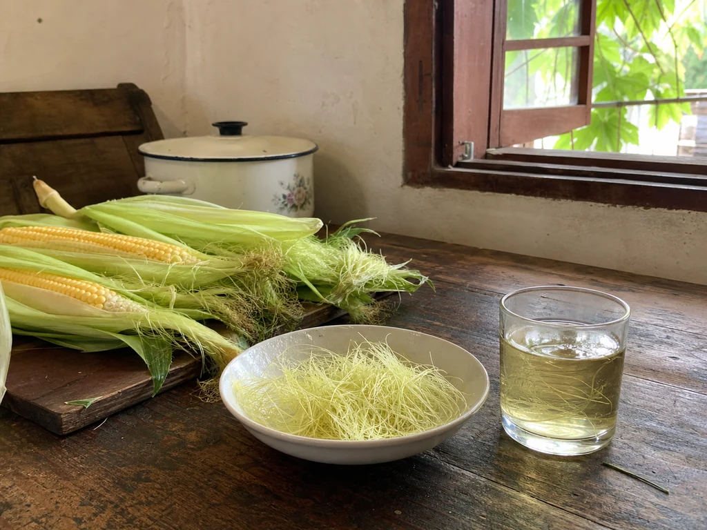

Corn Silk Water at the Edge of the Summer Stove
My grandmother saved the clean silk from fresh corn, rinsed it in a white bowl, and kept a small covered pot beside the lunch stove.

The silk she kept
My grandmother shucked corn over a low basin so nothing fell onto the floor. The green husks went into one pile. She drew the pale silk away with her fingers, discarded the dark ends, and laid the clean strands across the rim of a white bowl.
I sat beside her and rolled loose threads into a knot. She opened it again without looking up. The silk had to remain separate and airy until she carried the bowl to the sink.
A small pot beside lunch
She rinsed the strands, lowered them into a small pot, and put on the lid. The corn itself went into the larger pot for lunch. Steam gathered around both lids, but the smaller one made almost no kitchen smell.
Other summer days had their own pots. Mung beans split against the sides, winter-melon tea left a dark ring near the rim, and lotus-root water clouded faintly around the slices. Corn silk left only a pale yellow line in the cup.
After the corn was eaten
My grandmother poured through a wire strainer and pressed the wet strands down with the back of a spoon. She set the first cup near the open window and covered the rest again.
After lunch, the cobs and husks were cleared from the table. The small pot stayed at the rear of the stove until she washed it with the bowls.